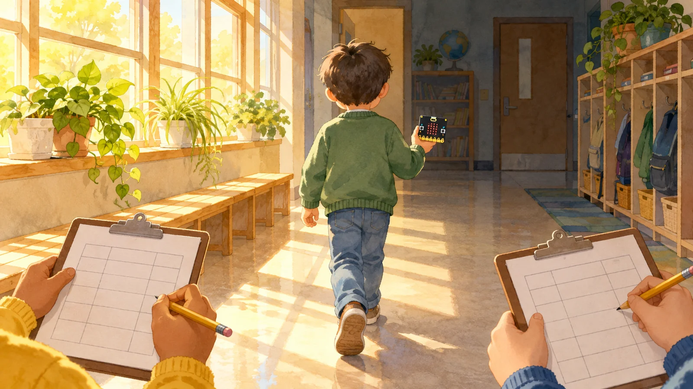
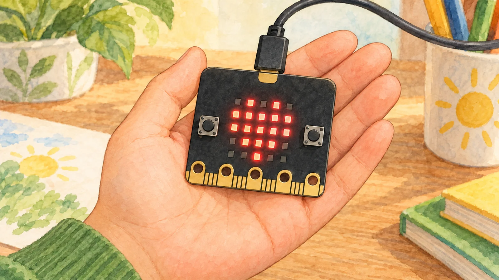
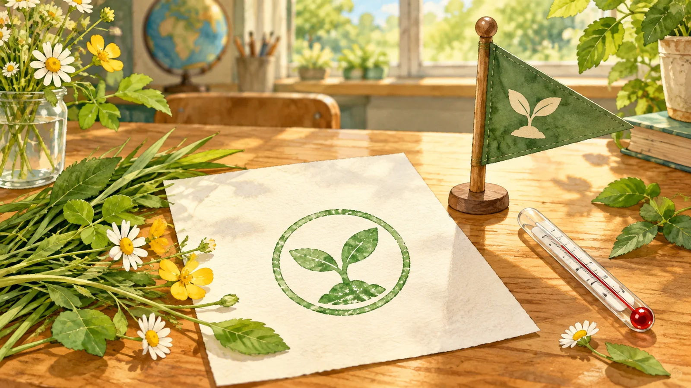

기록 간격 견주기 활동
기록 간격이 넓으면 무엇을 놓치는지 짚어요
흐리지 않은 막대 하나를 눌러 가장 크게 놓칠 곳을 예상해요. 확인하기를 누르고, 이렇게 두 판을 짚어 봐요.
미션 1 · 놓칠 곳을 짚어요

30초마다만 적으면 가장 크게 놓칠 막대를 짚어요.
10초마다 적은 값30초 기록에 들어감30초 기록으로 짐작한 값
미션 2 · 기록 간격을 바꿔요

마이크로비트 A 버튼을 몇 초마다 누를지 정해 보아요.
10초마다 적은 값기록에 들어감기록으로 짐작한 값튀는 막대
미션 3 · 적을 때를 직접 정해요
다시 걸을 때는 기록을 네 번만 할 수 있어요.
지난 기록을 보고, 0초와 60초 말고 두 번을 언제 적을지 골라요. 가장 크게 놓친 차이를 12 아래로 줄여 봐요.
지난번 값적기로 한 때기록으로 짐작한 값튀는 막대

세 미션을 모두 했어요. 바뀌는 곳에서는 간격을 좁혀 적어요.
기기로 잰 값이 아니에요. 활동3에서 마이크로비트로 걸으며 직접 재요.
그림 일부는 생성형 AI로 만들었어요.